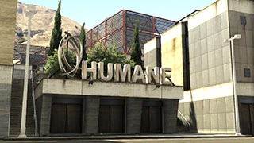

Ataque ao Laboratorio Humane
O Ataque ao Laboratorio Humane é o terceiro golpe dos apartamentos de luxo e é considerado por muitos o mais divertido, pois envolve furtividade, paraquedismo e veículos de guerra pesados (jatos e helicópteros de ataque).

As Missões de Preparação (5 Etapas)
1.Códigos: Você encontra um contato num beco para pegar códigos. A polícia aparece e vira um tiroteio intenso.
2.Insurgents: Você vai até a pedreira da Merryweather roubar dois veículos blindados Insurgents.
- Dica: Use o Duke O'Death ou Kuruma para limpar os mercenários antes de entrar nos blindados.
3.EMP (PEM): Você invade o porta-aviões da Marinha para roubar um jato Hydra.
- EMP (PEM): Você invade o porta-aviões da Marinha para roubar um jato Hydra.
4.Valkyrie: Você invade o porto para roubar o helicóptero de ataque Valkyrie.
- Cuidado: Ele tem artilheiros nas laterais e um canhão explosivo na frente. Use-os para destruir os helicópteros que te perseguirem.
5.Entregar EMP (Furtiva): Esta é a missão que faz os jogadores desistirem. Você deve levar o Insurgent com o PEM para dentro do laboratório sem ser detectado.
- REGRA DE OURO: Use armas com silenciador. Se um guarda vir um corpo ou ouvir um tiro, a missão falha instantaneamente. Matem os guardas em dupla e de forma sincronizada.
A Final: Invasão ao Laboratório
A equipe se divide em dois grupos: Equipe de Chão e Equipe de Voo.
1. Equipe de Chão (Os Invasores)
- Vocês saltam de paraquedas do Valkyrie e caem no teto do laboratório.
- O PEM explode e corta a luz. Vocês usam Visão Noturna.
- Devem atravessar o laboratório matando guardas, pegar os arquivos e fugir por um túnel subaquático.
- Dica: No túnel, não esqueça de equipar o Respirador para não morrer afogado.
2. Equipe de Voo (Piloto e Artilheiro)
- Enquanto o pessoal está lá dentro, vocês ficam no helicóptero Valkyrie protegendo a área.
- O Piloto deve manter o helicóptero estável para que o Artilheiro consiga explodir os helicópteros de reforço da Merryweather que chegam por todos os lados.
Lucro e Recompensas
- Pagamento Total: $675.000 (dividido entre os 4)
- Bônus de Primeira Vez: $100.000
- Prêmio de Elite: $100.000 (Terminar em -9:30 min, dano no veículo -2% e ninguém morrer).
- Descontos Destravados: Libera o preço de atacado do Hydra, Valkyrie e Insurgent.
Este golpe é a porta de entrada para você ter veículos militares de elite. O Insurgent é um dos melhores carros do jogo para se proteger de explosões.O Humane Labs exige muita coordenação, especialmente na missão furtiva de entregar o PEM. Se você passar dela, o resto é pura diversão e explosão.
Assista a este guia para saber mais sobre.
l